손해평가사 (2022-06-04 기출문제)
1과목: 상법(보험편)
1. 상법상 손해보험계약에 관한 설명으로 옳은 것은?
- 피보험자는 보험계약에서 정한 불확정한 사고가 발생한 경우 보험금의 지급을 보험자에게 청구할 수 없다.
- 보험자가 보험계약자로부터 보험계약의 청약과 함께 보험료 상당액의 전부 또는 일부의 지급을 받은 때는 다른 약정이 없으면 30일 이내에 낙부통지를 발송해야 한다.
- 보험자는 보험사고가 발생한 경우 보험금이 아닌 형태의 보험급여를 지급할 것을 약정할 수 없다.
- 보험기간의 시기(始期)는 보험계약 체결시점과 같아야 한다.
(정답률: 알수없음)

2. 甲보험회사의 화재보험 약관에는 보험계약자에게 설명해야 하는 중요한 내용을 포함하고 있으나 甲회사가 이를 설명하지 않고 보험계약을 체결하였다. 이에 관한 설명으로 옳지 않은 것은? (다툼이 있으면 판례에 따름)
- 보험계약이 성립한 날로부터 1개월이 된 시점이라면 보험계약자는 보험계약을 취소할 수 있다.
- 甲보험회사는 화재보험약관을 보험계약자에게 교부해야 한다.
- 보험계약이 성립한 날로부터 4개월이 된 시점이라면 보험계약자는 보험계약을 취소할 수 없다.
- 보험계약자가 보험계약을 취소하지 않았다면 甲보험회사는 중요한 약관조항을 계약의 내용으로 주장할 수 있다.
(정답률: 알수없음)
3. 상법상 보험증권에 관한 설명으로 옳은 것은?
- 보험계약자가 보험증권을 멸실한 경우에는 보험자에 대하여 증권의 재교부를 청구할 수 있으며, 그 증권 작성의 비용은 보험계약자가 부담한다.
- 기존의 보험계약을 변경한 경우 보험자는 그 보험증권에 그 사실을 기재함으로써 보험증권의 교부에 갈음할 수 없다.
- 타인을 위한 보험계약이 성립된 경우에는 보험자는 그 타인에게 보험증권을 교부해야 한다.
- 보험계약자가 최초의 보험료를 지급하지 아니한 경우에도 보험계약이 성립한 때에는 보험자는 지체없이 보험증권을 작성하여 보험계약자에게 교부하여야 한다.
(정답률: 알수없음)
4. 타인을 위한 손해보험계약(보험회사 A, 보험계약자 B, 타인 C)에서 보험사고의 객관적 확정이 있는 경우 그 보험계약의 효력에 관한 설명으로 옳지 않은 것은?
- 보험계약 당시에 보험사고가 이미 발생하였음을 B가 알고서 보험계약을 체결하였다면 그 계약은 무효이다.
- 보험계약 당시에 보험사고가 이미 발생하였음을 A와 B가 알았을지라도 C가 알지 못했다면 그 계약은 유효하다.
- 보험계약 당시에 보험사고가 발생할 수 없음을 A가 알면서도 보험계약을 체결하였다면 그 계약은 무효이다.
- 보험계약 당시에 보험사고가 발생할 수 없음을 A, B, C가 알지 못한 때에는 그 계약은 유효하다.
(정답률: 알수없음)
5. 상법상 보험대리상 등에 관한 설명으로 옳은 것은 모두 몇 개인가?
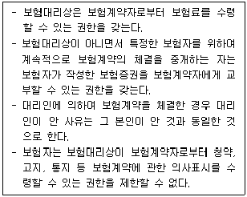
- 1개
- 2개
- 3개
- 4개
(정답률: 알수없음)
6. 상법상 보험계약자가 보험자와 보험료를 분납하기로 약정한 경우에 관한 설명으로 옳지 않은 것은?
- 보험계약 체결 후 보험계약자가 제1회 보험료를 지급하지 아니한 경우, 다른 약정이 없는 한 계약 성립 후 2월이 경과하면 보험계약은 해제된 것으로 본다.
- 계속보험료가 연체된 경우 보험자는 즉시 그 계약을 해지할 수는 없다.
- 계속보험료가 연체된 경우 보험대리상이 아니면서 특정한 보험자를 위하여 계속적으로 보험계약의 체결을 중개하는 자는 보험계약자에 대해 해지의 의사표시를 할 수 있는 권한이 있다.
- 보험대리상이 아니면서 특정한 보험자를 위하여 계속적으로 보험계약의 체결을 중개하는 자는 보험자가 작성한 영수증을 보험계약자에게 교부하는 경우에 한하여 보험료를 수령할 권한이 있다.
(정답률: 알수없음)
7. 상법상 특정한 타인(이하 “A”라고 함)을 위한 손해보험계약에 관한 설명으로 옳은 것은?
- 보험계약자는 A의 동의를 얻지 아니하거나 보험증권을 소지하지 아니하면 그 계약을 해지하지 못한다.
- A가 보험계약에 따른 이익을 받기 위해서는 이익을 받겠다는 의사표시를 하여야 한다.
- 보험계약자가 계속보험료의 지급을 지체한 때에는 보험자는 A에게 보험료 지급을 최고하지 않아도 보험계약을 해지할 수 있다.
- 보험계약자가 A를 위해 보험계약을 체결하려면 A의 위임을 받아야 한다.
(정답률: 알수없음)
8. 상법상 손해보험계약의 부활에 관한 설명으로 옳지 않은 것은?
- 제1회 보험료의 지급이 이루어지지 않아 보험계약이 해제된 경우 보험계약자는 보험계약의 부활을 청구할 수 있다.
- 계속보험료의 연체로 인하여 보험계약이 해지되고 해지환급금이 지급되지 아니한 경우 보험계약자는 보험계약의 부활을 청구할 수 있다.
- 계속보험료의 연체로 인하여 보험계약이 해지된 경우 보험계약자가 보험계약의 부활을 청구하려면 연체보험료에 약정이자를 붙여 보험자에게 지급해야 한다.
- 보험계약자가 상법상의 요건을 갖추어 계약의 부활을 청구하는 경우 보험자는 30일 이내에 낙부통지를 발송해야 한다.
(정답률: 알수없음)
9. 상법상 고지의무에 관한 설명으로 옳은 것은?
- 타인을 위한 손해보험계약에서 그 타인은 고지의무를 부담하지 않는다.
- 보험자가 서면으로 질문한 사항은 중요한 사항으로 본다.
- 고지의무자가 고의 또는 중과실로 중요한 사항을 불고지 또는 부실고지 한 사실을 보험자가 보험계약 체결직후 알게 된 경우, 보험자가 그 사실을 안 날로부터 1월이 경과하면 보험계약을 해지할 수 없다.
- 고지의무자가 고의 또는 중과실로 중요한 사항을 불고지 또는 부실고지한 경우 보험자가 계약 당시에 그 사실을 알았을지라도 보험자는 보험계약을 해지할 수 있다.
(정답률: 알수없음)
10. 보험기간 중 사고발생의 위험이 현저하게 변경된 경우에 관한 설명으로 옳은 것을 모두 고른 것은?
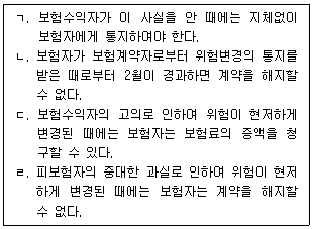
- ㄱ, ㄴ
- ㄴ, ㄷ
- ㄷ, ㄹ
- ㄱ, ㄴ, ㄷ, ㄹ
(정답률: 알수없음)
11. 보험계약의 해지에 관한 설명으로 옳지 않은 것은? (다툼이 있으면 판례에 따름)
- 보험자가 파산의 선고를 받은 때에는 보험계약자는 계약을 해지할 수 있다.
- 보험자가 보험기간 중에 사고발생의 위험이 현저하게 증가하여 보험계약을 해지한 경우 이미 지급한 보험금의 반환을 청구할 수 없다.
- 보험자가 파산의 선고를 받은 경우 해지하지 아니한 보험계약은 파산선고 후 3월을 경과한 때에는 그 효력을 잃는다.
- 보험자가 보험기간중 사고발생의 위험이 현저하게 변경되었음을 이유로 계약을 해지하려는 경우 그 사실을 입증하여야 한다.
(정답률: 알수없음)
12. 상법상 보험사고의 발생에 따른 보험자의 책임에 관한 설명으로 옳은 것은?
- 보험수익자가 보험사고의 발생을 안 때에는 보험자에게 그 통지를 할 의무가 없다.
- 보험사고가 보험계약자의 고의로 인하여 생긴 때에는 보험자는 보험금액을 지급할 책임이 없다.
- 보험자는 보험금액의 지급에 관하여 약정기간이 없는 경우 지급할 보험금액이 정하여진 날로부터 5일내에 지급하여야 한다.
- 보험자의 책임은 당사자간에 다른 약정이 없으면 보험계약자가 보험계약의 체결을 청약한 때로부터 개시한다.
(정답률: 알수없음)
13. 상법 보험편에 관한 설명으로 옳지 않은 것은? (다툼이 있으면 판례에 따름)
- 재보험에서는 당사자간의 특약에 의하여 상법 보험편의 규정을 보험계약자의 불이익으로 변경할 수 있다.
- 보험계약자 등의 불이익변경 금지원칙은 보험계약자와 보험자가 서로 대등한 경제적 지위에서 계약조건을 정하는 기업보험에 있어서는 그 적용이 배제된다.
- 상법 보험편의 규정은 그 성질에 반하지 아니하는 범위에서 공제에도 준용된다.
- 상법 보험편의 규정은 약관에 의하여 피보험자나 보험수익자의 이익으로 변경할 수 없다.
(정답률: 알수없음)
14. 상법상 손해보험증권에 기재되어야 하는 사항으로 옳은 것은 모두 몇 개인가?
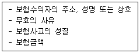
- 1개
- 2개
- 3개
- 4개
(정답률: 알수없음)
15. 상법상 손해보험에 관한 설명으로 옳지 않은 것은?
- 당사자간에 보험가액을 정한 때에는 그 가액은 사고발생시의 가액으로 정한 것으로 본다.
- 당사자는 약정에 의하여 보험사고로 인하여 상실된 피보험자가 얻을 보수를 보험자가 보상할 손해액에 산입할 수 있다.
- 화재보험의 보험자는 화재의 소방 또는 손해의 감소에 필요한 조치로 인하여 생긴 손해를 보상할 책임이 있다.
- 보험계약은 금전으로 산정할 수 있는 이익에 한하여 보험계약의 목적으로 할 수 있다.
(정답률: 알수없음)
16. 손해보험에서의 보험가액에 관한 설명으로 옳은 것은?
- 초과보험에 있어서 보험계약의 목적의 가액은 사고 발생시의 가액에 의하여 정한다.
- 보험금액이 보험계약의 목적의 가액을 현저하게 초과한 때에는 보험계약자는 소급하여 보험료의 감액을 청구할 수 있다.
- 보험가액이 보험계약 당시가 아닌 보험기간 중에 현저하게 감소된 때에는 보험자는 보험료와 보험금액의 감액을 청구할 수 없다.
- 초과보험이 보험계약자의 사기로 인하여 체결된 때에는 그 계약은 무효이며 보험자는 그 사실을 안 때까지의 보험료를 청구할 수 있다.
(정답률: 알수없음)
17. 상법상 소멸시효에 관하여 ( )에 들어갈 내용으로 옳은 것은?
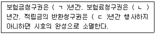
- ㄱ: 2, ㄴ: 3, ㄷ: 2
- ㄱ: 2, ㄴ: 3, ㄷ: 3
- ㄱ: 3, ㄴ: 2, ㄷ: 3
- ㄱ: 3, ㄴ: 3, ㄷ: 2
(정답률: 알수없음)
18. 상법상 중복보험에 관한 설명으로 옳지 않은 것은?
- 보험계약자가 중복보험의 체결사실을 보험자에게 통지하지 아니한 경우 보험자는 보험계약을 취소할 수 있다.
- 중복보험을 체결한 경우 보험계약자는 각 보험자에 대하여 각 보험계약의 내용을 통지하여야 한다.
- 중복보험이라 함은 동일한 보험계약의 목적과 동일한 사고에 관하여 수개의 보험계약이 동시에 또는 순차로 체결된 경우를 말한다.
- 중복보험은 하나의 보험계약을 수인의 보험자와 체결한 공동보험과 구별된다.
(정답률: 알수없음)
19. 다음 사례에 관한 설명으로 옳은 것은? (단, 다른 약정이 없고, 보험사고 당시 보험가액은 보험계약 당시와 동일한 것으로 전제함)
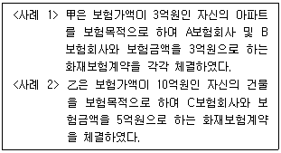
- 화재로 인하여 甲의 아파트가 전부 소실된 경우 甲은 A와 B로부터 각각 3억원의 보험금을 수령할 수 있다.
- 화재로 인하여 甲의 아파트가 전부 소실된 경우 甲이 A에 대한 보험금 청구를 포기하였다면 甲에게 보험금 3억원을 지급한 B는 A에 대해 구상금을 청구할 수 없다.
- 화재로 인하여 乙의 건물에 5억원의 손해가 발생한 경우 C는 乙에게 5억원을 보험금으로 지급하여야 한다.
- 화재로 인하여 甲의 아파트가 전부 소실된 경우 A는 甲에 대하여 3억원의 한도에서 B와 연대책임을 부담한다.
(정답률: 알수없음)
20. 화재보험에 있어서 보험자의 보상의무에 관한 설명으로 옳지 않은 것은? (다툼이 있으면 판례에 따름)
- 보험사고의 발생은 보험금 지급을 청구하는 보험계약자 등이 입증해야 한다.
- 보험자의 보험금지급의무는 보험기간 내에 보험사고가 발생하고 그 보험사고의 발생으로 인하여 피보험자의 피보험이익에 손해가 생기면 성립된다.
- 손해란 피보험이익의 전부 또는 일부가 멸실됐거나 감손된 것을 말한다.
- 보험의 목적에 관하여 보험자가 부담할 손해가 생긴 경우에는 그 후 그 목적이 보험자가 부담하지 아니하는 보험사고의 발생으로 인하여 멸실된 때에는 보험자는 이미 생긴 손해를 보상할 책임을 면한다.
(정답률: 알수없음)
21. 상법상 손해보험에서 손해액의 산정기준 등에 관한 설명으로 옳지 않은 것은?
- 보험자가 보상할 손해액은 그 손해가 발생한 때와 곳의 가액에 의하여 산정하는 것이 원칙이다.
- 손해액의 산정에 관한 비용은 보험계약자의 부담으로 한다.
- 보험자가 손해를 보상할 경우에 보험료의 지급을 받지 아니한 잔액이 있으면 그 지급기일이 도래하지 아니한 때라도 보상할 금액에서 이를 공제할 수 있다.
- 보험자는 약정에 따라 신품가액에 의하여 손해액을 산정할 수 있다.
(정답률: 알수없음)
22. 상법상 손해보험에 있어 보험자의 면책 사유로 옳은 것을 모두 고른 것은?
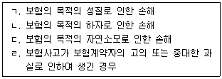
- ㄱ, ㄴ
- ㄴ, ㄷ
- ㄷ, ㄹ
- ㄱ, ㄴ, ㄷ, ㄹ
(정답률: 알수없음)
23. 상법상 손해보험에서 손해방지의무에 관한 설명으로 옳지 않은 것은? (다툼이 있으면 판례에 따름)
- 손해방지의무의 주체는 보험계약자와 피보험자이다.
- 손해방지를 위하여 필요 또는 유익하였던 비용은 보험자가 부담한다.
- 손해방지를 위하여 필요 또는 유익하였던 비용과 보상액이 보험금액을 초과한 경우에는 보험금액의 한도에서만 보험자가 이를 부담한다.
- 피보험자가 손해방지의무를 고의 또는 중과실로 위반한 경우 보험자는 손해방지의무 위반과 상당인과관계가 있는 손해에 대하여 배상을 청구할 수 있다.
(정답률: 알수없음)
24. 보험목적에 관한 보험대위에 관한 설명이다. ( )에 들어갈 내용으로 옳은 것은?
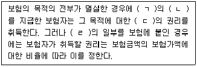
- ㄱ: 보험금액, ㄴ: 전부, ㄷ: 피보험자, ㄹ: 보험가액
- ㄱ: 보험금액, ㄴ: 일부, ㄷ: 보험계약자, ㄹ: 보험금액
- ㄱ: 보험가액, ㄴ: 일부, ㄷ: 피보험자, ㄹ: 보험가액
- ㄱ: 보험가액, ㄴ: 전부, ㄷ: 피보험자, ㄹ: 보험가액
(정답률: 알수없음)
25. 제3자에 대한 보험대위에 관한 설명으로 옳지 않은 것은? (다툼이 있으면 판례에 따름)
- 제3자에 대한 보험대위의 취지는 이득금지 원칙의 실현과 부당한 면책의 방지에 있다.
- 보험자는 피보험자와 생계를 같이 하는 가족에 대한 피보험자의 권리는 취득하지 못하는 것이 원칙이다.
- 보험금을 지급한 보험자는 그 지급한 금액의 한도에서 그 제3자에 대한 피보험자의 권리를 취득한다.
- 보험약관상 보험자가 면책되는 사고임에도 불구하고 보험자가 보험금을 지급한 경우 피보험자의 제3자에 대한 권리를 대위취득할 수 있다.
(정답률: 알수없음)
2과목: 농어업재해보험법령
26. 농어업재해보험법상 재해보험 발전 기본계획에 포함되어야 하는 사항으로 명시되지 않은 것은?
- 재해보험의 종류별 가입률 제고 방안에 관한 사항
- 손해평가인의 정기교육에 관한 사항
- 재해보험사업에 대한 지원 및 평가에 관한 사항
- 재해보험의 대상 품목 및 대상 지역에 관한 사항
(정답률: 알수없음)
27. 농어업재해보험법상 농업재해보험심의회의 심의 사항에 해당되는 것을 모두 고른 것은?
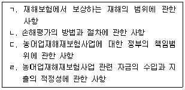
- ㄱ, ㄴ
- ㄴ, ㄷ
- ㄱ, ㄷ, ㄹ
- ㄱ, ㄴ, ㄷ, ㄹ
(정답률: 알수없음)
28. 농어업재해보험법상 재해보험을 모집할 수 있는 자에 해당하지 않는 것은?
- 산림조합중앙회의 임직원
- ｢수산업협동조합법｣에 따라 설립된 수협은행의 임직원
- ｢산림조합법｣제48조의 공제규정에 따른 공제모집인으로서 농림축산식품부장관이 인정하는 자
- ｢보험업법｣제83조제1항에 따라 보험을 모집할 수 있는 자
(정답률: 알수없음)
29. 농어업재해보험법상 손해평가 등에 관한 설명으로 옳은 것은?
- 재해보험사업자는 동일 시ㆍ군ㆍ구 내에서 교차손해평가를 수행할 수 없다.
- 농림축산식품부장관은 손해평가인이 공정하고 객관적인 손해평가를 수행할 수 있도록 연 1회 이상 정기교육을 실시하여야 한다.
- 농림축산식품부장관이 손해평가 요령을 정한 뒤 이를 고시하려면 미리 금융위원회의 인가를 거쳐야 한다.
- 농림축산식품부장관은 손해평가인 간의 손해평가에 관한 기술ㆍ정보의 교환을 금지하여야 한다.
(정답률: 알수없음)
30. 농어업재해보험법령상 손해평가사의 자격 취소사유로 명시되지 않은 것은?
- 손해평가사의 자격을 거짓 또는 부정한 방법으로 취득한 경우
- 거짓으로 손해평가를 한 경우
- 업무 수행과 관련하여 보험계약자로부터 향응을 제공받은 경우
- 법 제11조의4제7항을 위반하여 손해평가사 명의의 사용이나 자격증의 대여를 알선한 경우
(정답률: 알수없음)
31. 농어업재해보험법령상 보험금의 압류 금지에 관한 조문의 일부이다. ( )에 들어갈 내용은?
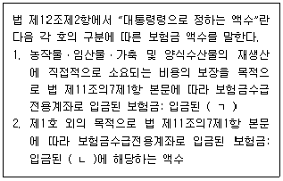
- ㄱ: 보험금의 2분의 1, ㄴ: 보험금의 3분의 1
- ㄱ: 보험금의 2분의 1, ㄴ: 보험금의 3분의 2
- ㄱ: 보험금 전액, ㄴ: 보험금의 3분의 1
- ㄱ: 보험금 전액, ㄴ: 보험금의 2분의 1
(정답률: 알수없음)
32. 농어업재해보험법령상 재해보험사업자가 보험모집 및 손해평가 등 재해보험 업무의 일부를 위탁할 수 있는 자에 해당하지 않는 것은?
- ｢농업협동조합법｣에 따라 설립된 지역농업협동조합
- ｢수산업협동조합법｣에 따라 설립된 지구별 수산업협동조합
- ｢보험업법｣제187조에 따라 손해사정을 업으로 하는 자
- 농어업재해보험 관련 업무를 수행할 목적으로 ｢민법｣에 따라 설립된 영리법인
(정답률: 알수없음)
33. 농어업재해보험법상 재정지원에 관한 설명으로 옳지 않은 것은?
- 정부는 재해보험사업자의 재해보험의 운영 및 관리에 필요한 비용의 전부를 지원하여야 한다.
- 지방자치단체는 예산의 범위에서 재해보험가입자가 부담하는 보험료의 일부를 추가로 지원할 수 있다.
- ｢풍수해보험법｣에 따른 풍수해보험에 가입한 자가 동일한 보험목적물을 대상으로 재해보험에 가입할 경우에는 정부가 재정지원을 하지 아니한다.
- 법 제19조제1항에 따른 보험료와 운영비의 지원 방법 및 지원 절차 등에 필요한 사항은 대통령령으로 정한다.
(정답률: 알수없음)
34. 농어업재해보험법령상 손해평가인의 자격요건에 관한 내용의 일부이다. ( )에 들어갈 숫자는?
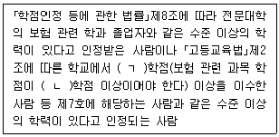
- ㄱ: 60, ㄴ: 40
- ㄱ: 60, ㄴ: 45
- ㄱ: 80, ㄴ: 40
- ㄱ: 80, ㄴ: 45
(정답률: 알수없음)
35. 농어업재해보험법상 농어업재해재보험기금의 재원에 포함되는 것을 모두 고른 것은?
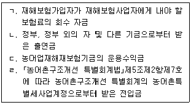
- ㄱ, ㄴ, ㄷ
- ㄱ, ㄴ, ㄹ
- ㄱ, ㄷ, ㄹ
- ㄴ, ㄷ, ㄹ
(정답률: 알수없음)
36. 농어업재해보험법령상 농어업재해재보험기금(이하 “기금”이라 한다)에 관한 설명으로 옳은 것은?
- 농림축산식품부장관은 행정안전부장관과 협의를 거쳐 기금의 관리ㆍ운용에 관한 사무의 일부를 농업정책보험금융원에 위탁할 수 있다.
- 농림축산식품부장관은 기금의 수입과 지출을 명확히 하기 위하여 농업정책보험금융원에 기금계정을 설치하여야 한다.
- 기금의 관리ㆍ운용에 필요한 경비의 지출은 기금의 용도에 해당한다.
- 기금은 농림축산식품부장관이 환경부장관과 협의하여 관리ㆍ운용한다.
(정답률: 알수없음)
37. 농어업재해보험법상 보험사업의 관리에 관한 설명으로 옳지 않은 것은?
- 농림축산식품부장관 또는 해양수산부장관은 재해보험사업을 효율적으로 추진하기 위하여 손해평가인력의 육성 업무를 수행한다.
- 농림축산식품부장관은 손해평가사의 업무 정지 처분을 하는 경우 청문을 하지 않아도 된다.
- 농림축산식품부장관은 손해평가사 자격시험의 실시 및 관리에 관한 업무를 ｢한국산업인력공단법｣에 따른 한국산업인력공단에 위탁할 수 있다.
- 정부는 농어업인의 재해대비의식을 고양하고 재해보험의 가입을 촉진하기 위하여 교육ㆍ홍보 및 보험가입자에 대한 정책자금 지원, 신용보증 지원 등을 할 수 있다.
(정답률: 알수없음)
38. 농어업재해보험법상 손해평가사의 자격을 취득하지 아니하고 그 명의를 사용하거나 자격증을 대여받은 자에게 부과될 수 있는 벌칙은?
- 과태료 5백만원
- 벌금 2천만원
- 징역 6월
- 징역 2년
(정답률: 알수없음)
39. 농업재해보험 손해평가요령상 용어의 정의에 관한 내용의 일부이다. ( )에 들어갈 내용은?
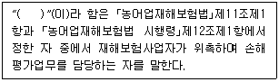
- 손해평가인
- 손해평가사
- 손해사정사
- 손해평가보조인
(정답률: 알수없음)
40. 농업재해보험 손해평가요령상 손해평가인의 업무로 명시되지 않은 것은?
- 보험가액 평가
- 보험료율 산정
- 피해사실 확인
- 손해액 평가
(정답률: 알수없음)
41. 농업재해보험 손해평가요령상 손해평가인의 위촉과 교육에 관한 설명으로 옳은 것은?
- 손해평가인 정기교육의 세부내용 중 농업재해보험 상품 주요내용은 농업재해보험에 관한 기초지식에 해당한다.
- 손해평가인 정기교육의 세부내용에 피해유형별 현지조사표 작성 실습은 포함되지 않는다.
- 재해보험사업자 및 ｢농어업재해보험법｣제14조에 따라 손해평가 업무를 위탁받은 자는 손해평가 업무를 원활히 수행하기 위하여 손해평가보조인을 운용할 수 있다.
- 실무교육에 참여하는 손해평가인은 재해보험사업자에게 교육비를 납부하여야 한다.
(정답률: 알수없음)
42. 농업재해보험 손해평가요령상 손해평가인 위촉의 취소에 관한 설명이다. ( )에 들어갈 내용은?
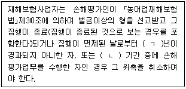
- ㄱ: 1, ㄴ: 자격정지
- ㄱ: 2, ㄴ: 업무정지
- ㄱ: 1, ㄴ: 업무정지
- ㄱ: 3, ㄴ: 자격정지
(정답률: 알수없음)
43. 농업재해보험 손해평가요령상 손해평가반 구성에 관한 설명으로 옳은 것은?
- 자기가 실시한 손해평가에 대한 검증조사 및 재조사에 해당하는 손해평가의 경우 해당자를 손해평가반 구성에서 배제하여야 한다.
- 자기가 가입하였어도 자기가 모집하지 않은 보험계약에 관한 손해평가의 경우 해당자는 손해평가반 구성에 참여할 수 있다.
- 손해평가인은 손해평가를 하는 경우에는 손해평가반을 구성하고 손해평가반별로 평가일정계획을 수립하여야 한다.
- 손해평가반은 손해평가인을 3인 이상 포함하여 7인 이내로 구성한다.
(정답률: 알수없음)
44. 농업재해보험 손해평가요령상 손해평가준비 및 평가결과 제출에 관한 설명으로 옳은 것은?
- 손해평가반은 재해보험사업자가 실시한 손해평가결과를 기록할 수 있도록 현지조사서를 마련하여야 한다.
- 손해평가반은 손해평가를 실시하기 전에 현지조사서를 재해보험사업자에게 배부하고 손해평가에 임하여야 한다.
- 손해평가반은 보험가입자가 7일 이내에 손해평가가 잘못되었음을 증빙하는 서류 등을 제출하는 경우 다른 손해평가반으로 하여금 재조사를 실시하게 할 수 있다.
- 손해평가반은 보험가입자가 정당한 사유없이 손해평가를 거부하여 손해평가를 실시하지 못한 경우에는 그 피해를 인정할 수 없는 것으로 평가한다는 사실을 보험가입자에게 통지한 후 현지조사서를 재해보험사업자에게 제출하여야 한다.
(정답률: 알수없음)
45. 농업재해보험 손해평가요령상 손해평가결과 검증에 관한 설명으로 옳은 것은?
- 재해보험사업자 및 재해보험사업의 재보험사업자는 손해평가반이 실시한 손해평가결과를 확인하기 위하여 손해평가를 실시한 보험목적물 중에서 일정수를 임의 추출하여 검증조사를 할 수 있다.
- 손해평가반은 농림축산식품부장관으로 하여금 검증조사를 하게 할 수 있다.
- 손해평가결과와 임의 추출조사의 결과에 차이가 발생하면 해당 손해평가반이 조사한 전체 보험목적물에 대하여 재조사를 하여야 한다.
- 보험가입자가 검증조사를 거부하는 경우 검증조사반은 손해평가 검증을 강제할 수 있다는 사실을 보험가입자에게 통지하여야 한다.
(정답률: 알수없음)
46. 농업재해보험 손해평가요령상 특정위험방식 중 “인삼”의 경우, 다음의 조건으로 산정한 보험금은?
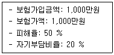
- 200만원
- 300만원
- 500만원
- 700만원
(정답률: 알수없음)
47. 농업재해보험 손해평가요령상 종합위험방식 ｢이앙ㆍ직파불능보장｣에서 “벼”의 경우, 보험가입금액이 1,000만원이고 보험가액이 1,500만원이라면 산정한 보험금은? (단, 다른 사정은 고려하지 않음)
- 100만원
- 150만원
- 250만원
- 375만원
(정답률: 알수없음)
48. 농업재해보험 손해평가요령상 종합위험방식 상품의 조사내용 중 “착과수조사”에 해당되는 품목은?
- 사과
- 감귤
- 자두
- 단감
(정답률: 알수없음)
49. 농업재해보험 손해평가요령상 농작물의 품목별ㆍ재해별ㆍ시기별 손해수량 조사방법 중 종합위험방식 상품에 관한 표의 일부이다. ( )에 들어갈 내용은?
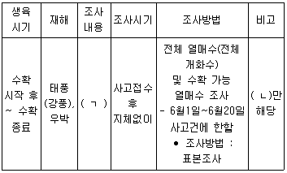
- ㄱ: 과실손해조사, ㄴ: 복분자
- ㄱ: 과실손해조사, ㄴ: 무화과
- ㄱ: 수확량조사, ㄴ: 복분자
- ㄱ: 수확량조사, ㄴ: 무화과
(정답률: 알수없음)
50. 농업재해보험 손해평가요령상 농업시설물의 보험가액 및 손해액 산정에 관한 설명이다. ( )에 들어갈 내용은?
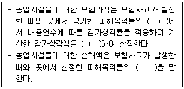
- ㄱ: 시장가격, ㄴ: 곱, ㄷ: 시장가격
- ㄱ: 시장가격, ㄴ: 차감, ㄷ: 원상복구비용
- ㄱ: 재조달가액, ㄴ: 곱, ㄷ: 시장가격
- ㄱ: 재조달가액, ㄴ: 차감, ㄷ: 원상복구비용
(정답률: 알수없음)
3과목: 재배학 및 원예작물학
51. 작물 분류학적으로 과명(family name)별 작물의 연결이 옳은 것은?
- 백합과 – 수선화
- 가지과 – 감자
- 국화과 – 들깨
- 장미과 - 블루베리
(정답률: 알수없음)
52. 토양침식이 우려될 때 재배법으로 옳지 않은 것은?
- 점토함량이 높은 식토 경지에서 재배한다.
- 토양의 입단화를 유지한다.
- 경사지에서는 계단식 재배를 한다.
- 녹비작물로 초생재배를 한다.
(정답률: 알수없음)
53. 토양의 생화학적 환경에 관한 내용이다. ( )에 들어갈 내용으로 옳은 것은?
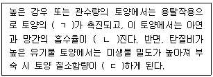
- ㄱ: 산성화, ㄴ: 높아, ㄷ: 감소
- ㄱ: 염기화, ㄴ: 낮아, ㄷ: 증가
- ㄱ: 염기화, ㄴ: 높아, ㄷ: 감소
- ㄱ: 산성화, ㄴ: 낮아, ㄷ: 증가
(정답률: 알수없음)
54. 토양수분 스트레스를 줄이기 위한 재배방법으로 옳지 않은 것은?
- 요수량이 낮은 품종을 재배한다.
- 칼륨결핍이 발생하지 않도록 재배한다.
- 질소과용이 발생하지 않도록 한다.
- 밭재배 시 재식밀도를 높여 준다.
(정답률: 알수없음)
55. 내건성 작물의 생육특성을 모두 고른 것은?
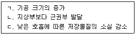
- ㄱ, ㄴ
- ㄱ, ㄷ
- ㄴ, ㄷ
- ㄱ, ㄴ, ㄷ
(정답률: 알수없음)
56. 다음 ( )에 들어갈 내용으로 옳은 것은?
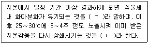
- ㄱ: 춘화, ㄴ: 일비
- ㄱ: 이춘화, ㄴ: 춘화
- ㄱ: 춘화, ㄴ: 이춘화
- ㄱ: 이춘화, ㄴ: 일비
(정답률: 알수없음)
57. A손해평가사가 어떤 농가에게 다음과 같은 조언을 하고 있다. 다음 ( )에 들어갈 내용으로 옳은 것은?
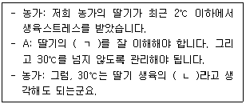
- ㄱ: 생육가능온도, ㄴ: 최적적산온도
- ㄱ: 생육최적온도, ㄴ: 최적한계온도
- ㄱ: 생육가능온도, ㄴ: 최고한계온도
- ㄱ: 생육최적온도, ㄴ: 최고적산온도
(정답률: 알수없음)
58. 광도가 증가함에 따라 작물의 광합성이 증가하는데 일정 수준 이상에 도달하게 되면 더 이상 증가하지 않는 지점은?
- 광순화점
- 광보상점
- 광반응점
- 광포화점
(정답률: 알수없음)
59. 과수재배에 있어 생장조절물질에 관한 설명으로 옳지 않은 것은?
- 지베렐린 - 포도의 숙기촉진과 과실비대에 이용
- 루톤분제 - 대목용 삽목 번식 시 발근 촉진
- 아브시스산 - 휴면 유도
- 에틸렌 - 과실의 낙과 방지
(정답률: 알수없음)
60. 도복 피해를 입은 작물에 대한 피해 경감대책으로 옳지 않은 것은?
- 왜성품종 선택
- 질소질 비료 시용
- 맥류에서의 높은 복토
- 밀식재배 지양
(정답률: 알수없음)
61. 정식기에 어린 묘를 외부환경에 미리 적응시켜 순화시키는 과정은?
- 경화
- 왜화
- 이화
- 동화
(정답률: 알수없음)
62. 무성생식에 비해 종자번식이 갖는 상업적 장점이 아닌 것은?
- 대량생산 용이
- 결실연령 단축
- 원거리이동 용이
- 우량종 개발
(정답률: 알수없음)
63. P손해평가사는 '가지'의 종자발아율이 낮아 고민하고 있는 육묘 농가를 방문하였다. 이 농가에서 잘못 적용한 영농법은?
- 보수성이 좋은 상토를 사용하였다.
- 통기성이 높은 상토를 사용하였다.
- 광투과가 높도록 상토를 복토하였다.
- pH가 교정된 육묘용 상토를 사용하였다.
(정답률: 알수없음)
64. 토양 표면을 피복해 주는 멀칭의 효과가 아닌 것은?
- 잡초 억제
- 로제트 발생
- 토양수분 조절
- 지온 조절
(정답률: 알수없음)
65. 경종적 방제차원의 병충해 방제가 아닌 것은?
- 내병성 품종선택
- 무병주 묘 이용
- 콜히친 처리
- 접목재배
(정답률: 알수없음)
66. 농가에서 널리 이용하는 엽삽에 유리한 작물이 아닌 것은?
- 렉스베고니아
- 글록시니아
- 페페로미아
- 메리골드
(정답률: 알수없음)
67. 화훼작물에 있어 진균에 의한 병이 아닌 것은?
- 잘록병
- 역병
- 잿빛곰팡이병
- 무름병
(정답률: 알수없음)
68. '잎들깨'를 생산하는 농가에서 생산량 증대를 위해 야간 인공조명을 설치하였다. 이 야간 조명으로 인하여 옆 농가에서 피해가 있을 법한 작물은?
- 장미
- 칼랑코에
- 페튜니아
- 금잔화
(정답률: 알수없음)
69. 오이의 암꽃 수를 증가시킬 수 있는 육묘 관리법은?
- 지베렐린 처리
- 질산은 처리
- 저온 단일 조건
- 고온 장일 조건
(정답률: 알수없음)
70. 다음의 해충 방제법은?
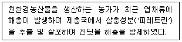
- 화학적 방제법
- 물리적 방제법
- 페로몬 방제법
- 생물적 방제법
(정답률: 알수없음)
71. 다음이 설명하는 과수의 병은?
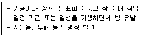
- 포도 근두암종병
- 사과 탄저병
- 감귤 궤양병
- 대추나무 빗자루병
(정답률: 알수없음)
72. 과수의 결실에 관한 설명으로 옳지 않은 것은?
- 타가수분을 위해 수분수는 20 % 내외로 혼식한다.
- 탄질비(C/N ratio)가 높을수록 결실률이 높아진다.
- 꽃가루관의 신장은 저온조건에서 빨라지므로 착과율이 높아진다.
- 엽과비(leaf/fruit ratio)가 높을수록 과실의 크기가 커진다.
(정답률: 알수없음)
73. 종자춘화형에 속하는 작물은?
- 양파, 당근
- 당근, 배추
- 양파, 무
- 배추, 무
(정답률: 알수없음)
74. A농가가 선택한 피복재는?
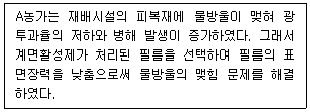
- 광파장변환 필름
- 폴리에틸렌 필름
- 해충기피 필름
- 무적 필름
(정답률: 알수없음)
75. 다음이 설명하는 재배법은?
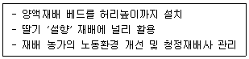
- 고설 재배
- 토경 재배
- 고랭지 재배
- NFT 재배
(정답률: 알수없음)